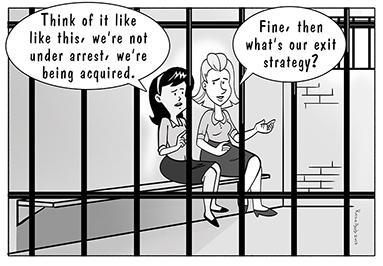

Meet Kimberly Robinson
Hello, my name is Kimberly Robinson. I'm a person who loves to learn new things. I'm the person who ask why to almost everything I encounter new. I look for the why to fall within the confines of how I perceive God has defined it. Yes, I'm a believer in the Creator. Rarely is religion an acceptable subject when speaking in public, but it's hard to define me without discussing what's the motivating factor for most of what I do. Just saying :-).
I'm also a late bloomer with a very long stem. Bad analogy. I'm mature, but barely. If you're younger than 40, that may cover everyone here, listen carefully. Life goes faster than you could ever imagine! No, really, you'll notice after age 35 each year will roll from January to December much faster than the previous year. Some years will prove to be PREMIUM YEARS and will be critical to your future self.
Climb the Mountain
What are those PREMIUM YEARS? Those are the years when you make critical decisions that will either prove to make life easier or harder later in life. Education and career are at the top of CRITICAL DECISIONS. You're so much better off if you just do it!! Finish school now not later. Whatever the obstacle and let's be honest it's probably the trauma you may have encountered in your childhood, it's an obstacle you MUST overcome. I have met many people and I truly believe there are so few well adjusted humans. Poor parenting has ruined the lives of so many people. Don't be a victem of your parent's failure to properly nurture you! That's not the only obstacle facing people. The second is mindset. Without the ability to control emotions and direct energy you're only spinning your wheels. You're literally spinning the wheel of life and not moving to the next space.
It's A Matter of Perspective
So how do you move forward when you feel stuck? It is mission critical to get outside perspetive. If you're ability beliver in God, start there. Not so much? Find a good therapist. The mind is a powerful organ. It's everything people! You can trick off years moving in the wrong direction when you just can't see things as they really are. It's almost like your brain can separate and hide from itself. You don't know what you don't know. Knowledge is power. A good therapist can provide perspective. Speaking of the mind, observation of thoughts is very important. Think of yourself as a lab subject. Ask yourself... why did I do that, why do I feel that way, what are my triggers? Get to know yourself. Become your own best friend. You'll be with yourself until you die! Please forgive my rambling. I certainly didn't plan for my home page to include any of this. But I certainly hope it prompts you to think a little deeper.